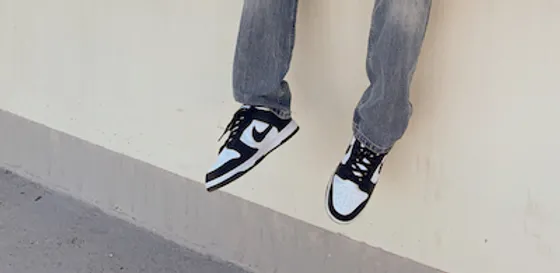

Hip Hop - It Don't Stop!

My favorite style of dance is hip hop. It was the first style I had ever learned, and it was not until recently that I started getting into new styles. I have tapped into contemporary and jazz, but I feel as though I cannot fully express myself with them. Hip hop reveals a different side of me, the person that exists deep within me. My connection to hip hop is rooted in decades upon decades of history.
The History of Hip Hop
Hip hop has been around for decades; it dates back to August 11, 1973. Clive Campbell and his colleague, Coke La Rock are said to be the "fathers of hip-hop," and it all started at a party in Bronx, New York.
Since then, hip hop has influenced a number of societal practices. It has not only allowed for people to have a voice, but it has changed the way we dress and express ourselves.
Graffiti and Hip Hop
Both hip hop and graffiti are creative ways to express oneself. Graffiti is scribbled, scratched, or sprayed pieces of art on public walls or buildings. It is commonly linked to hip hop in the sense that it represents those that take part in the hip hop community. Because of this, graffiti had become just as much competition as dance. With the growing population of hip hop dancers, it is no surprise to see a growth in graffiti.
Street Culture
Hip hop has made an impact on the way we dress. Street culture did not sprout overnight. Wearing jewelry, chains, tracksuits, sneakers, etc. came with the evolution of hip hop. These clothing choices were made not only to emphasize movements, but for the sole purpose of "showing out."
It is safe to say hip hop has influenced many different aspects of our lives, from clothing to art. The hip hop culture is one I will always be proud to be part of.